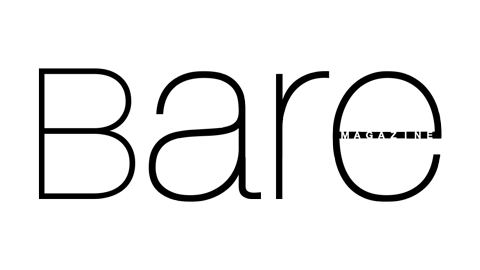
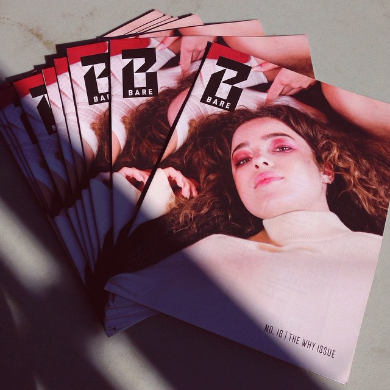
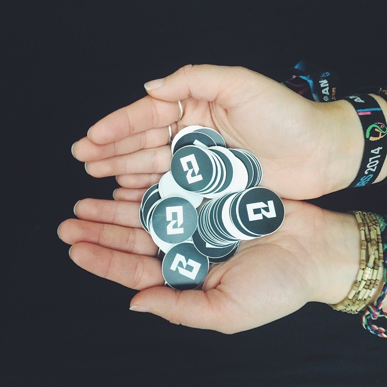
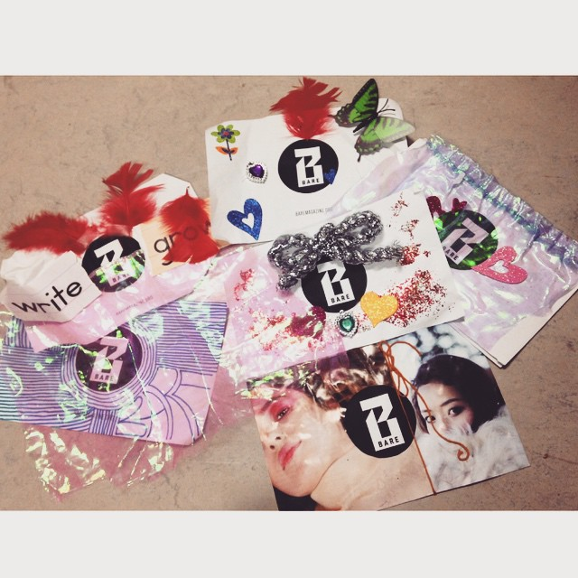

BARE
BARE Magazine is a student-run publication at UC Berkeley that focuses on fashion, lifestyle, and art. They produce a print magazine each semester as well as run the BARE Blog. I was a member of their layout design team in 2012, when the editors approved a new logo and identity that I helped create.

The rebrand effort represented BARE’s continued expansion into the arts—food, music, and other culture. The new logo has two versions: (1) a stylized “B” emblem and (2) a full version with “BARE” across the bottom stroke.
The mark was designed with the ability to be used with a variety of overlay textures, as shown on their Street Style blog. It also scales down well to icon applications, and is more instantly identifiable.
Since its adoption, the logo has slowly built up equity and recognition, helping to grow BARE as a brand. With each coming year, new BARE designers are finding even more creative ways that they can utilize the logo. As its designer, it’s been fun to see.
Examples


